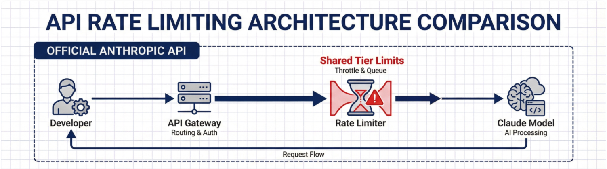

Day 7: Hitting API Limits and System Constraints

Up until this point, the focus had been on getting the system to work and then validating how well it performed. By Day 6, I had something that could execute tasks and produce structured outputs. Naturally, the next step was to push it further.
That is where I ran into my first real constraint.
As I increased usage and started running more scenarios through the system, I began encountering rate limits from the AI provider. At first, it was intermittent. A request would fail, then succeed on retry. But as I continued testing, it became clear that this was not a one-off issue. It was a fundamental limitation of the system.
This introduced a completely new dimension to the project. Up until now, I had been focused on functionality and correctness. Now I had to think about throughput, limits, and cost.
I started digging into how the rate limiting actually worked. There were tiers, token limits per minute, and overall usage caps. The difference between tiers was significant, and it became obvious that scaling this system would require a deeper understanding of how requests were being structured and sent.
This led to a few immediate questions. How often should the system poll for work? How large should each prompt be? How do I avoid unnecessary or duplicate requests? And most importantly, how do I ensure that the system remains responsive without exceeding limits?
At this stage, I began experimenting with basic mitigation strategies. This included introducing delays between requests, thinking about retry logic, and being more intentional about how prompts were constructed. Reducing unnecessary context became just as important as adding the right information.
Another realization was that not all tasks need to be processed immediately. Just because the system can pick up a work item does not mean it should. This opened the door to thinking about prioritization and scheduling, rather than treating every task equally.
This phase also forced me to start thinking about cost in a more concrete way. Running multiple iterations, large prompts, and repeated retries all add up. What started as an experiment now had real implications in terms of resource usage.
By the end of Day 7, the system was still functional, but it was clear that I had reached the limits of a naive implementation. Simply sending more requests and hoping for the best was not going to scale.
This was an important moment in the journey. Constraints like these are not blockers. They are signals. They force better design decisions and push the system toward something more intentional.
The next step is to move from reacting to these constraints to designing around them. That means improving efficiency, adding smarter control over execution, and continuing to refine how the system behaves under load.